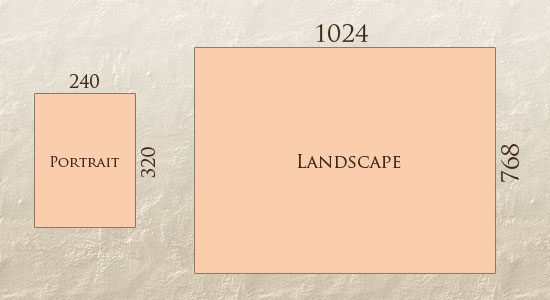
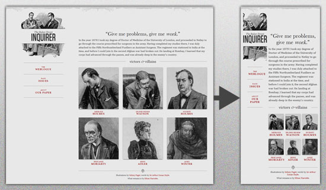
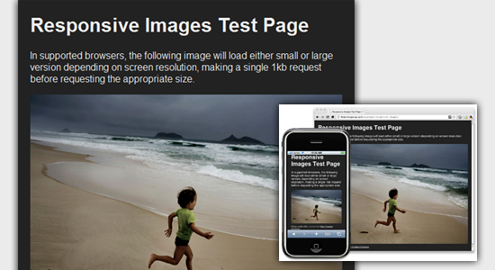

Responsive Web Design: What It Is and How To Use It
Almost every new client these days wants a mobile version of their website. It’s practically essential after all: one design for the BlackBerry, another for the iPhone, the iPad, netbook, Kindle — and all screen resolutions must be compatible, too. In the next five years, we’ll likely need to design for a number of additional inventions. When will the madness stop? It won’t, of course.
n the field of Web design and development, we’re quickly getting to the point of being unable to keep up with the endless new resolutions and devices. For many websites, creating a website version for each resolution and new device would be impossible, or at least impractical. Should we just suffer the consequences of losing visitors from one device, for the benefit of gaining visitors from another? Or is there another option?
Responsive Web design is the approach that suggests that design and development should respond to the user’s behavior and environment based on screen size, platform and orientation. The practice consists of a mix of flexible grids and layouts, images and an intelligent use of CSS media queries. As the user switches from their laptop to iPad, the website should automatically switch to accommodate for resolution, image size and scripting abilities. In other words, the website should have the technology to automatically respond to the user’s preferences. This would eliminate the need for a different design and development phase for each new gadget on the market.
The Concept Of Responsive Web Design
Transplant this discipline onto Web design, and we have a similar yet whole new idea. Why should we create a custom Web design for each group of users; after all, architects don’t design a building for each group size and type that passes through it? Like responsive architecture, Web design should automatically adjust. It shouldn’t require countless custom-made solutions for each new category of users.
Obviously, we can’t use motion sensors and robotics to accomplish this the way a building would. Responsive Web design requires a more abstract way of thinking. However, some ideas are already being practiced: fluid layouts, media queries and scripts that can reformat Web pages and mark-up effortlessly (or automatically).
But responsive Web design is not only about adjustable screen resolutions and automatically resizable images, but rather about a whole new way of thinking about design. Let’s talk about all of these features, plus additional ideas in the making.
Adjusting Screen Resolution
With more devices come varying screen resolutions, definitions and orientations. New devices with new screen sizes are being developed every day, and each of these devices may be able to handle variations in size, functionality and even color. Some are in landscape, others in portrait, still others even completely square. As we know from the rising popularity of the iPhone, iPad and advanced smartphones, many new devices are able to switch from portrait to landscape at the user’s whim. How is one to design for these situations?

In addition to designing for both landscape and portrait (and enabling those orientations to possibly switch in an instant upon page load), we must consider the hundreds of different screen sizes. Yes, it is possible to group them into major categories, design for each of them, and make each design as flexible as necessary. But that can be overwhelming, and who knows what the usage figures will be in five years? Besides, many users do not maximize their browsers, which itself leaves far too much room for variety among screen sizes.
Morten Hjerde and a few of his colleagues identified statistics on about 400 devices sold between 2005 and 2008. Below are some of the most common:
Part of the Solution: Flexible Everything
A few years ago, when flexible layouts were almost a “luxury” for websites, the only things that were flexible in a design were the layout columns (structural elements) and the text. Images could easily break layouts, and even flexible structural elements broke a layout’s form when pushed enough. Flexible designs weren’t really that flexible; they could give or take a few hundred pixels, but they often couldn’t adjust from a large computer screen to a netbook.
Now we can make things more flexible. Images can be automatically adjusted, and we have workarounds so that layouts never break (although they may become squished and illegible in the process). While it’s not a complete fix, the solution gives us far more options. It’s perfect for devices that switch from portrait orientation to landscape in an instant or for when users switch from a large computer screen to an iPad.
In Ethan Marcotte’s article, he created a sample Web design that features this better flexible layout:

Flexible Images
One major problem that needs to be solved with responsive Web design is working with images. There are a number of techniques to resize images proportionately, and many are easily done. The most popular option, noted in Ethan Marcotte’s article on fluid images but first experimented with by Richard Rutter, is to use CSS’s max-width for an easy fix.
img { max-width: 100%; }
As long as no other width-based image styles override this rule, every image will load in its original size, unless the viewing area becomes narrower than the image’s original width. The maximum width of the image is set to 100% of the screen or browser width, so when that 100% becomes narrower, so does the image. Essentially, as Jason Grigsby noted, “The idea behind fluid images is that you deliver images at the maximum size they will be used at. You don’t declare the height and width in your code, but instead let the browser resize the images as needed while using CSS to guide their relative size”. It’s a great and simple technique to resize images beautifully.
Note that max-width is not supported in IE, but a good use of width: 100% would solve the problem neatly in an IE-specific style sheet. One more issue is that when an image is resized too small in some older browsers in Windows, the rendering isn’t as clear as it ought to be. There is a JavaScript to fix this issue.
While the above is a great quick fix and good start to responsive images, image resolution and download times should be the primary considerations. While resizing an image for mobile devices can be very simple, if the original image size is meant for large devices, it could significantly slow download times and take up space unnecessarily.
Filament Group’s Responsive Images
This technique, presented by the Filament Group, takes this issue into consideration and not only resizes images proportionately, but shrinks image resolution on smaller devices, so very large images don’t waste space unnecessarily on small screens.

This technique requires a few files, all of which are available on Github. First, a JavaScript file (rwd-images.js), the .htaccess file and an image file (rwd.gif). Then, we can use just a bit of HTML to reference both the larger and smaller resolution images: first, the small image, with an .r prefix to clarify that it should be responsive, and then a reference to the bigger image using data-fullsrc.
Stop Mobile Simulator Image Resizing
We can use an Apple-specific meta tag to fix the problem, placing it below the website’s head section.
< meta name="viewport" content="width=device-width; initial-scale=1.0" >
Setting the initial-scale to 1 overrides the default to resize images proportionally, while leaving them as is if their width is the same as the device’s width (in either portrait or lanscape mode).
Media Queries
CSS3 supports all of the same media types as CSS 2.1, such as screen, print and handheld, but has added dozens of new media features, including max-width, device-width, orientation and color. New devices made after the release of CSS3 (such as the iPad and Android devices) will definitely support media features. So, calling a media query using CSS3 features to target these devices would work just fine, and it will be ignored if accessed by an older computer browser that does not support CSS3.